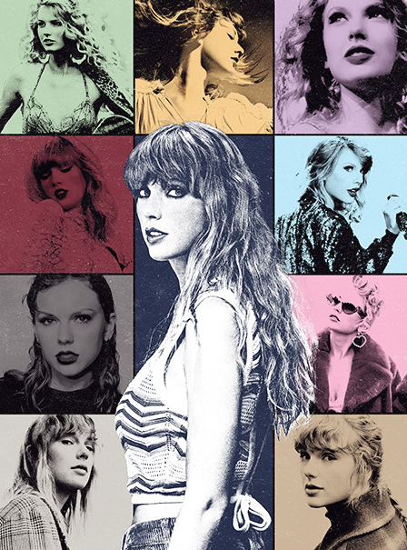
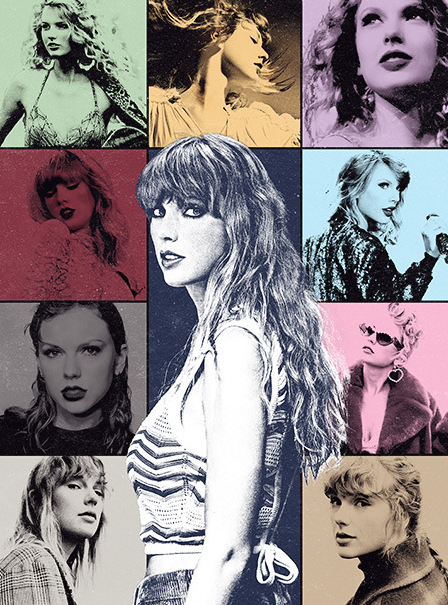

Taylor Swift é cantora, compositora, atriz, diretora e roteirista norte-americana. Suas
composições narrativas, muitas vezes inspirada pelas suas
experiências pessoais, tem recebido ampla cobertura mediática e elogios críticos. Swift mudou-se para
Nashville aos 14 anos de idade para se
tornar uma cantora de música country, assinando um contrato de composição com a Sony/ATV Music Publishing em
2004 e um contrato de gravação com a Big Machine Records em 2005.
Taylor Alison Swift nasceu no dia 13 de Dezembro de 1989, na cidade de Reading, na Pensilvânia. Ela
passou seus primeiros anos de vida em
uma fazenda onde eram cultivados pinheiros de Natal, no Condado de Montgomery, também na Pensilvânia.
Seu pai, Scott Kingsley Swift, é um consultor financeiro da Merrill Lynch. Scott também nasceu na
Pensilvânia e é descendente de três
gerações de presidentes de bancos.
Sua mãe, Andrea (sobrenome de solteira Finlay), é uma dona de casa que anteriormente trabalhou como
executiva
de marketing de um fundo de investimento.
A cantora possui um irmão mais novo, Austin, que foi estudante da Universidade de Notre Dame.
Swift recebeu o nome de gênero neutro "Taylor" porque sua mãe acreditava que este iria ajudar a formar
uma carreira empresarial de sucesso.
Uma das primeiras memórias musicais de Swift é ouvir sua avó materna, Marjorie Finlay, cantar na igreja.
Quando criança, ela gostava das trilhas
sonoras dos filmes da Disney: "Meus pais perceberam que, uma vez que as palavras acabavam, eu inventava as
minhas". Swift disse que deve sua
confiança à mãe, que a ajudou a se preparar para as apresentações em classes quando criança. Ela também
atribui seu "fascínio por escrever e contar histórias" à mãe.
Swift atraiu-se pelo aspecto narrativo da música country,e foi introduzida ao gênero ouvindo "as grandes
artistas country country dos anos 90".
A música de Swift consiste principalmente em elementos de pop, synth-pop, country, country pop e rock.
Seus trabalhos posteriores se baseiam em gêneros como indie folk,
rock alternativo, R&B, EDM, hip hop e trap.Swift se descreveu como uma artista country até o lançamento de
1989 (2014), que ela caracterizou como seu primeiro "álbum sonoramente pop".